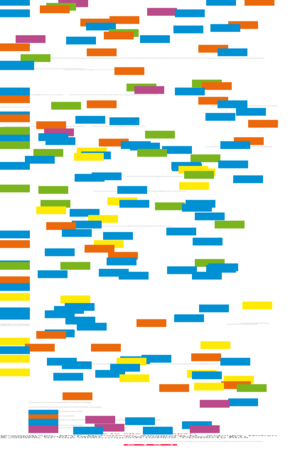

| About IR |
| Editors |
| Author instructions |
| Copyright |
| Author index |
| Subject index |
| Search |
| Reviews |
| Register |
| Home |

Volume 2 No 1 August 1996
Information Research: an electronic journal, is published
four times a year by Professor T.D. Wilson of the Department of Information Studies, University
of Sheffield.
ISSN 1368-1613
Contents
 Guest Paper: Electronic journals and scholarly communication: a citation and reference study
Guest Paper: Electronic journals and scholarly communication: a citation and reference study
Stephen P. Harter and Hak Joon Kim, School of Library and Information Science, Indiana University, Bloomington, Indiana
Processing morphological variants in searches of Latin text
M. Greengrass, A.M. Robertson, R. Schinke and P. Willett
The impact of information on clinical decision-making by general medical practitioners
F.E. Wood and P. Wright
Hypermedia as an experiential learning tool: a theoretical model
J.M.B. Nunes and S.P. Fowell
Information Research is designed, maintained and published by by Professor Tom Wilson. Design and editorial content © T.D. Wilson, 1996